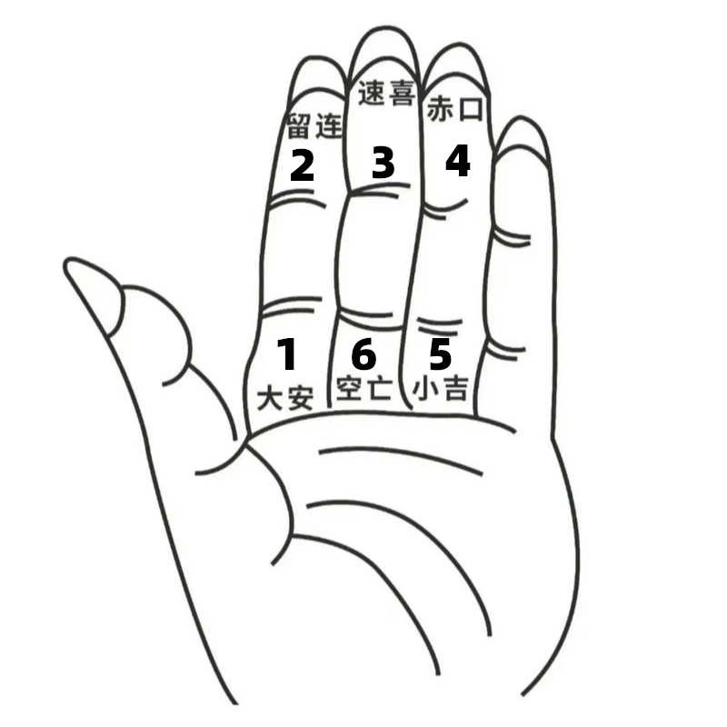

简介
小六壬是一种古老的预测术。它因操作简便且实用，被很多人所喜爱。
其主要用途有两个方面：一是择吉，也就是挑选吉日吉时；二是应事，即预测即将做的事情是否顺利等。
在使用小六壬进行预测时，需要遵循"不急不占，无事不占，不动不占"这一原则。
历史源流
小六壬占卜术起源于唐代历算家李淳风创立的 "六壬时课"。
到明朝，刘伯温在《百战奇略》中将其作为辅助决策工具。
小六壬曾在元朝还传至日本，演变成孔明的六曜星。
名称由来
在古代干支纪时系统中，天干 "壬" 象征阳水，代表万物起始与生命孕育，五行以水为先。
在六十甲子循环中，壬干对应壬申、壬午、壬辰、壬寅、壬子、壬戌六个组合，故称 "六壬"。
为与原来的六壬占法（大六壬）区别，李淳风以月日时辰于手掌上起课的占卜法称为 "小六壬"。
基本要素
六神
大安、留连、速喜、赤口、小吉、空亡
掌诀定位

大安在食指根部；留连在食指指尖；
速喜在中指指尖；赤口在无名指指尖；
小吉在无名指根部；空亡在中指根部。
推算方法
掐算顺序
首次掐算，以 "大安" 为起点，按大安、留连、速喜、赤口、小吉、空亡的六神次序数，算得起始宫位。
第二次掐算，以起始宫位为起点，仍旧按大安、留连、速喜、赤口、小吉、空亡的六神次序数，算得出中间宫位。
最后一次掐算，以中间宫位为起点，仍旧按大安、留连、速喜、赤口、小吉、空亡的六神次序数，算得出结果宫位。
起始宫位、中间宫位、结果宫位，即为所求事情的开始、发展、结果。
掐算数字的由来
可按农历的月、日、时，求出事情的发展、变化、结果。
也可心血来潮时，随心得出三个随机数，求出事情的发展、变化、结果。
示例
如：农历三月初三，寅时，为3-3-3。
第一次从大安开始掐算，3为速喜；
第二次从速喜开始掐算，3为小吉；
第三次从小吉开始掐算，3为大安。
所测事情的开始、发展、结果为：速喜-小吉-大安。
吉凶判断
落在大安、速喜、小吉位置视为吉祥；
落在留连、赤口、空亡位置视为不吉。
宫位详解
大安
身不动时，属木青龙，谋事主一、五、七。
断日：大安事事昌，求谋在坤方，失物去不远，宅舍保安康，行人身未动，病者主无妨，将军回田野，仔细与推详。
留连
卒未归时，属水玄武，凡谋事主二、八、十。
断曰：留连事难成，求谋日未明，官事只宜缓，去者未回程，失物南方见，急讨方称心，更须防口舌，人口且平平。
速喜
人便至时，属火朱雀，凡谋事立三、六、九。
断曰：速喜喜来临，求财向南行，失物申未午，逢人路上寻，官事有福德，病者无祸侵，田定六畜吉，行人有信音。
赤口
官事凶时，属金白虎，凡谋事主四、七、十。
断日：赤日主口舌，官非切要防，失物急去寻，行人有惊慌，鸡犬多作怪，病者出西方，更须防咒诅，恐怕染瘟癀[huáng]。
小吉
人来喜时，属木六合，凡谋事主一、五、七。
断曰：小吉最吉昌，路上好商量，阴人来报喜，失物在坤方，行人立便至，交关甚是强，凡事皆和合，病者祷上苍。
空亡
信音稀时，属土勾陈，凡谋事主一、五、七。
断曰：空亡事不长，阴人小乖张，求财无利益，行人有灾殃，失物寻不见，官事有刑场，病人逢暗鬼，禳[ráng]解保安康。